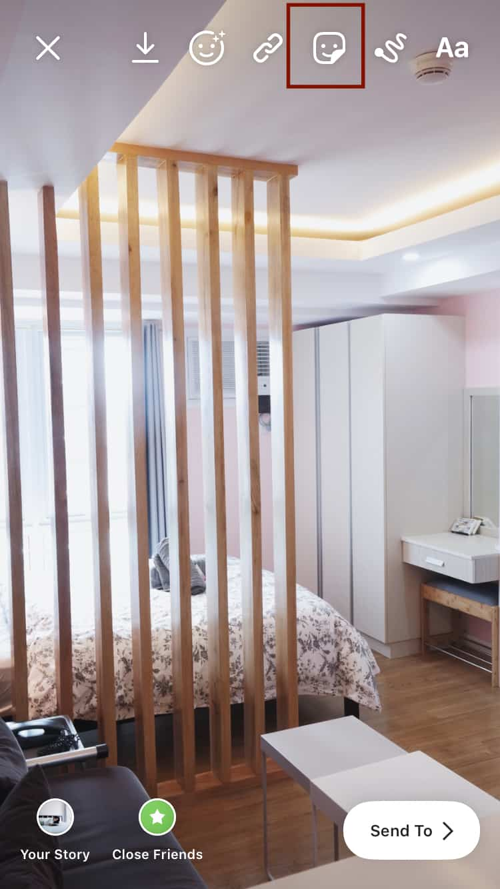
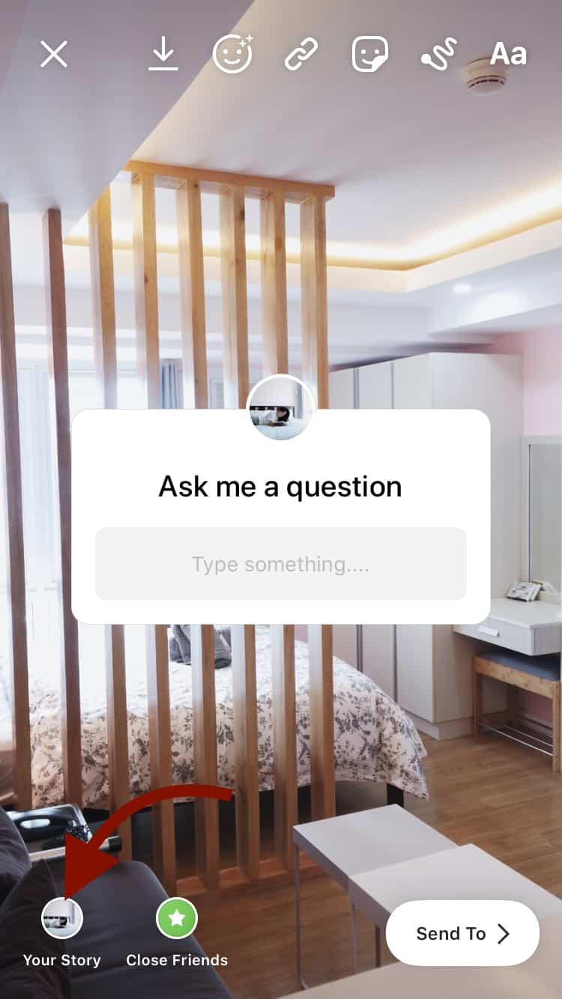
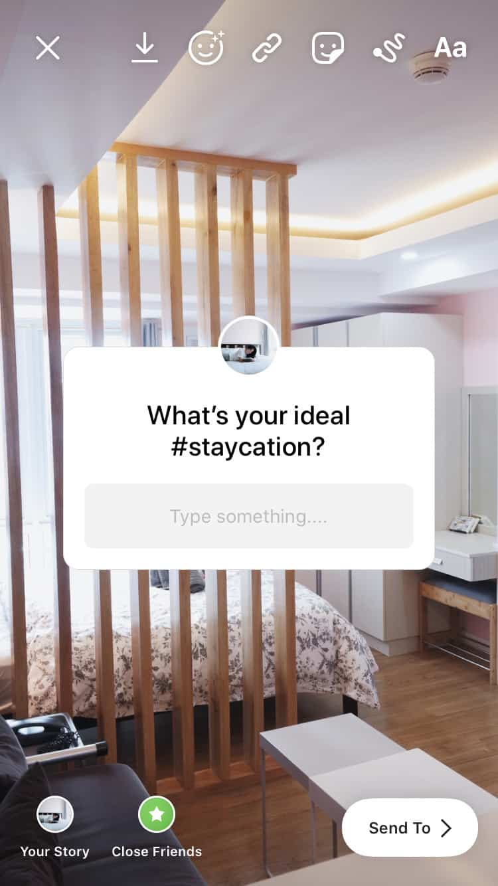
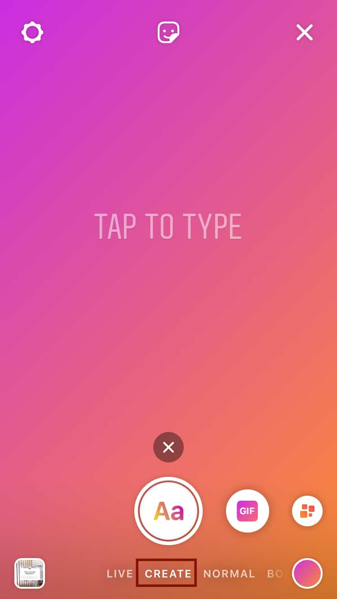

Instagram is an ever-evolving and highly interactive social media platform. In fact, it continues to experiment and create new features. One of the most interactive feature is the Question stickers. Learning how to ask a question on Instagram boosts engagement and helps you connect with your audience.
Where can you add these thoughtful prompts?
Aside from the caption, users can now start polls, ask a question, and receive responses from their audience. The possibilities for these new features are endless!
Credit: @forever21 via Instagram Stories
Ready to learn how to ask a question on Instagram?
In this post, we’ll provide you with tips and tricks to get more engagement. Plus, a few examples for inspiration!
But First, Why Should You Learn How To Ask A Question On Instagram?
Whether you’re leaving a prompt on your caption or asking a question on Stories, this strategy is great for interaction.
Find Your Biggest Fans
For one, you’ll increase engagement from your followers. Additionally, you’ll most likely find the biggest fans of your brand.
Users who answer your questions are already engaged with your account. By improving their experience, there’s a high chance of converting them into a customer.
Think of it this way: They spend time interacting in your feed and Stories. This means they’re taking their time looking into your content. Consider these fans when you’re:
- Creating a customer persona
- Sending a special Instagram message to devoted fans
- Offering exclusive gifts and behind-the-scenes info
- Asking for feedback
Take this example from @everlane, a clothing company. They have Transparency Tuesday where they go Live and ask their followers to send their questions. During the live, they do their best to answer them.
Credit: @everlane via Instagram Stories
Real-Time Marketing
Knowing how to ask a question on Instagram helps you get extra exposure. For instance, you can ask a question regarding a trending topic. You can ask questions like:
- Who are you cheering for [during a Super Bowl]?
- Have you seen the latest episode of [TV series]?
- Is the dress blue or white?
Don’t forget to add appropriate hashtags so your audience will find you!
Get Your Followers’ Opinion
Customer interaction is becoming a crucial part of marketing. For one, it humanizes your brand. Secondly, it boosts customer experience. For instance, learning how to ask a question on Instagram tells your audience that you’re willing to listen to their input.
Take this example from @Ikeausa. They asked their audience which type of cabinetry they prefer.
Credit: @ikeausa via Instagram Stories
Here are other ideas:
- Ask customers what products they want to see in the future
- What kind of content they want to see in your account
You can use the Poll or Question stickers in Stories. It’s fun, creative, and interactive. Your audience won’t mind answering them.
Do A Quick And Simple Market Research
Another reason why it’s important to learn how to ask a question on Instagram is for market research.
You don’t even need a complex analytics tool. All you have to do is ask a question on Instagram. Then save their responses and use this information for future marketing strategies.
By adding thoughtful questions in captions and Stories, you can:
- Gather info regarding your audience – where they are from, what they do, etc.
- Ask how they found out about your brand. This will help you understand which marketing strategy to focus on.
- Find out which of your products they love best.
Asking questions on Instagram takes no time at all. In the next section, you’ll learn how you can use questions to boost engagement.
How To Ask A Question On Instagram Caption
It’s not enough to post high-quality photos. To really engage the audience, you need a great copy. For this reason, the Instagram caption is a powerful tool to boost your content’s engagement.
For one, a good caption adds context to a post. Secondly, it also helps increase bio visits and click-throughs.
One of the best tips for writing a good copy is by adding a call-to-action. This means urging your audience to do something. Whether it’s to visit your website, or tap the heart, or answer a question in the comment section.
Here are a few tips on how to ask a question on Instagram caption:
Ask A Question To Win A Giveaway
Hosting an Instagram contest or giveaway is one of the best strategies to boost engagement. Want to take this strategy further?
Ask your followers to answer a question! For instance, a user will qualify if they give the correct answer in the comment section.
Take this example from @crimebythebook. To qualify for the contest, users must follow the account and tag two friends. However, they also added a bonus entry. They asked their followers to share which book they are most excited about.

Credit: @crimebythebook via Instagram
Start A Conversation
Utilize Instagram captions to reach out to your audience. First of all, add hashtags to make your content discoverable. Secondly, use it to start a conversation by asking a question.
But how to ask a question on Instagram caption?
Tip #1: Use #QOTD
You can start most of your caption with a Question of The Day. In doing so, when your followers see your content, they’ll expect a question. Then they can start engaging with your content.
Look at how @hayaisreading starts a conversation with her followers. She starts off her captions with a #QOTD.

Credit: @hayaisreading via Instagram
Tip #2: Ask a question to emphasize your brand voice and identity
Take a few pointers from @liahyoo, the founder of @kravebeauty. She always puts emphasis on their #PressReset tagline. In fact, in this post, she talks about what this tag means to her.

Credit: @liahyoo via Instagram
To interact with fans of her brand, she asked them what #PressReset means to them.
Tip #3: Promote A Product
You can also ask a question to promote a product without sounding too salesy.
@burtsbees does a great job in this post about their Matte Sticks. They started their caption with a simple question “Who loves using our Matte Sticks?”. Plus, they even added info that these sticks have a touch of color!

Credit: @burtsbees via Instagram
Instagram captions offer plenty of opportunities to interact with your audience. Adding simple, fun questions open up meaningful conversations. Plus, it gives your audience a chance to be heard.
Want to engage directly with your audience? Instead of just adding questions on Instagram captions, why not use Stories as well?
How To Ask A Question On Instagram Stories
Instagram Stories just got way more interactive with the addition of Poll and Question stickers. Here’s how:
Simply go to your Stories, then you can either add a background photo or video. Tap the Sticker button.
From here, select the Question sticker.

If you want your viewers to send in their questions, leave the label as is. Simply upload your Story.

Or you can also edit the label to ask a question.

Another way is to use the Create option in Stories.
Simply scroll right till you find Create.

From here, you can choose the following:
- Text Story
- Add a GIF
- Ask a “Yes” or “No” question
- Question Sticker
- Quiz Sticker

To view the answers and questions submitted by your viewers, simply open your Story. Then swipe up.
But does learning how to ask a question on Instagram Stories important? Yes!
- First of all, your IG Stories can be viewed by users who don’t follow your account. This feature provides a wider reach than your feed.
- Secondly, Stories are often more casual and interactive than a feed. Asking questions in your Stories gives you real-time answers.
- Thirdly, you have several Sticker options to choose from. Like Poll, Question, Slider, and Quiz stickers. This attracts more users to engage with your content.
- Most importantly, aside from using Poll and Question Stickers, you can also use animated Stories. This makes your Q&A even more interesting.
In the next section, we’ll give you ideas and example questions you can ask your followers to drive maximum engagement.
Tips On How To Ask A Question On Instagram Stories
Host A Q&A In Stories
One of the best marketing strategies is to interact with your audience. This creates a positive rapport and improves user experience.
One of the best ways to connect with them is by hosting a question and answer. Ask your fans to send their questions. It could be about your brand or product.
Why host a Q&A?
- It will make your fans feel important.
- Your audience will learn more about your brand.
- You can divulge exclusive and behind-the-scenes information
- Fan questions give you an insight into what areas you should improve or focus
Frank Green, a company that sells reusable cups and bottles, have a Story Highlight dedicated to Q&A.

Credit: @frankgreen_official via Instagram Stories
Their audience can send any questions. Some even left suggestions for future products!
Knixwear is another company that uses Questions to address their customers’ inquiries. They responded with a video that humanizes their brand.

Credit: @knixwear via Instagram Stories
Remember, by responding to their questions and suggestion, you’re making your audience feel that their opinion is valuable to your brand.
Talk About Your Products
Knowing how to ask a question on Instagram Stories allows you to talk more about your products. In doing so, it helps boost product awareness.
The Inkey List, a beauty company, used Stories to talk about one of their frequently asked questions.

Credit: @theinkeylist via Instagram Stories
What they did right?
- First of all, they provided their audience with valuable information about using their products
- Secondly, they highlighted some of their commonly used products.
- Most importantly, they placed emphasis on the benefits of using such products.
Here is another example from @theouai, a haircare company. By asking “What product questions can we answer for you?”, they made their audience feel that they’ll take their hair issues seriously.

Credit: @theouai via Instagram Stories
Tip: Let your audience know that you’ve heard their concerns. In doing so, you’ll increase customer loyalty.
Conduct A Brand Pop Quiz
Want to challenge your fans? Create a quiz about your brand and determine your ultimate fan!
It’s a fun, creative way for your audience to get to know your brand. Take a look at what @benandjerrys did in their Story.
They created the “Ultimate Superfan Quiz”. They challenged their followers whether they can ace it.

Credit: @benandjerrys via Instagram Stories
Fun and casual content are a sure hit. Stories such as the one above not only improve engagement but also brand awareness.
Another example is from @figleavesofficial, an online lingerie retailer. They used Stories to conduct a “just for fun Sunday quiz”.

Credit: @figleavesofficial via Instagram Stories
They also asked the audience’s input regarding what type of quiz they should conduct next.
Key takeaway: Learn how to ask a question on Instagram to gather customer insight. In doing so, you’ll know what they want to see more or less from your brand.
Host A Contest
Instagram contests are not limited to your feed. You can also host a contest on Instagram Stories.
Take this example from @benefitcosmetics. They asked their audience to guess how many products are in a jar.
The winners will receive their Brow Contour Pro!
Credit: @benefitcosmetics via Instagram Stories
Contests are a great way to engage with the audience. It’s quick, fun, and virtually takes no effort. Most importantly, it boosts brand and product awareness.
Showcase Your Brand Values
Burt’s Bees, a personal care products company, used Poll stickers to raise awareness regarding food waste. In doing so, they demonstrated their stand on saving the planet.

Credit: @burtsbees via Instagram Stories
In fact, they even use the hashtag #ChangeForNature.
Knowing how to ask a question on Instagram Stories allows you to:
- Create an interactive space to engage with your audience.
- Raise awareness regarding your brand’s advocacies.
- Let your audience know about your stand regarding trending issues.
Curate Frequently Asked Questions
Priscilla Ono, a global make-up artist, took over @fentybeauty‘s Stories. She answered frequently asked questions about their recently released foundation line.

Credit: @fentybeauty via Instagram Stories
Tip: Compile the FAQs you received and pin them as a Highlight.
In Conclusion
From gathering feedback to fun brand quizzes, knowing how to ask a question on Instagram is a great way to interact with your audience.
It’s another strategy to add to your growing set of options. Asking and responding to questions boost brand awareness. Plus, it also creates customer loyalty.
Ready to start asking questions on Instagram? Use the tips above for some inspiration!